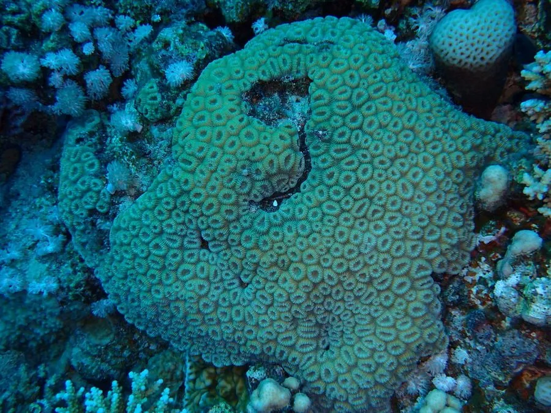

其他无脊椎动物 · 动物界
蜂巢珊瑚 Favia favus

印度洋—太平洋珊瑚礁的块状珊瑚，珊瑚虫排列成蜂巢状，颜色从黄绿到褐色，夜间伸出触手捕食浮游生物。
- 分类
- 门刺胞动物门纲珊瑚纲目石珊瑚目科蜂巢珊瑚科属蜂巢珊瑚属
- 栖息环境
- 热带珊瑚礁的礁坡、礁坪和潟湖，水深 0–30 米
- 地理分布
- 印度洋—太平洋热带海域，从红海到太平洋岛屿
- 保护级别
- IUCN 暂无评估；CITES 附录Ⅱ
物种志
蜂巢珊瑚的群体呈半球形或团块状，表面由许多六边形或近似圆形的珊瑚杯紧密排列，像蜂巢一样，因此得名。每个珊瑚杯中央有放射状隔片，珊瑚虫藏在杯内，活体呈黄绿色、褐色或灰绿色，夜间触手伸出时像一层绒毛。
它分布于印度洋—太平洋的珊瑚礁，常见于礁坡和潟湖，水深 0–30 米，生长缓慢，骨骼致密。与虫黄藻共生外，它也会在夜间捕食浮游动物。繁殖方式为有性繁殖，群体释放精卵，浮浪幼虫附着后逐渐长成新的群体。蜂巢珊瑚对水质和温度变化较敏感，海水升温会引起白化，过度捕捞和破坏性渔业也会损伤礁体；所有石珊瑚都被列入 CITES 附录Ⅱ，贸易和采集受到管制。
形态与习性
- 形态半球形或团块状群体，珊瑚杯呈蜂巢状排列
- 共生与虫黄藻共生，夜间捕食浮游动物
- 繁殖有性繁殖，释放精卵后浮浪幼虫附着
- 水深常见于 0–30 m 的礁坡和潟湖
- 生长生长缓慢，骨骼致密坚硬
- 保护CITES 附录Ⅱ
趣味知识
- 蜂巢珊瑚的珊瑚杯紧密排列成六边形，像一块天然的蜂巢。
- 它白天看起来像石头，夜间伸出半透明触手才显出动物本色。
- 蜂巢珊瑚骨骼致密，是礁体中比较耐波浪冲击的类型。